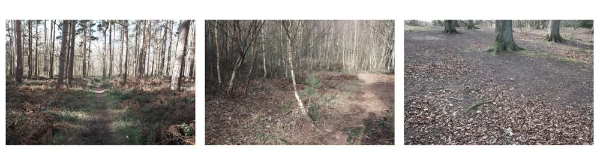
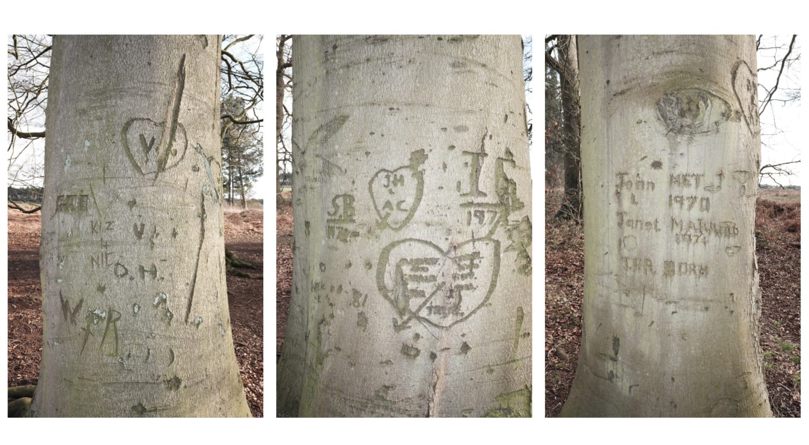
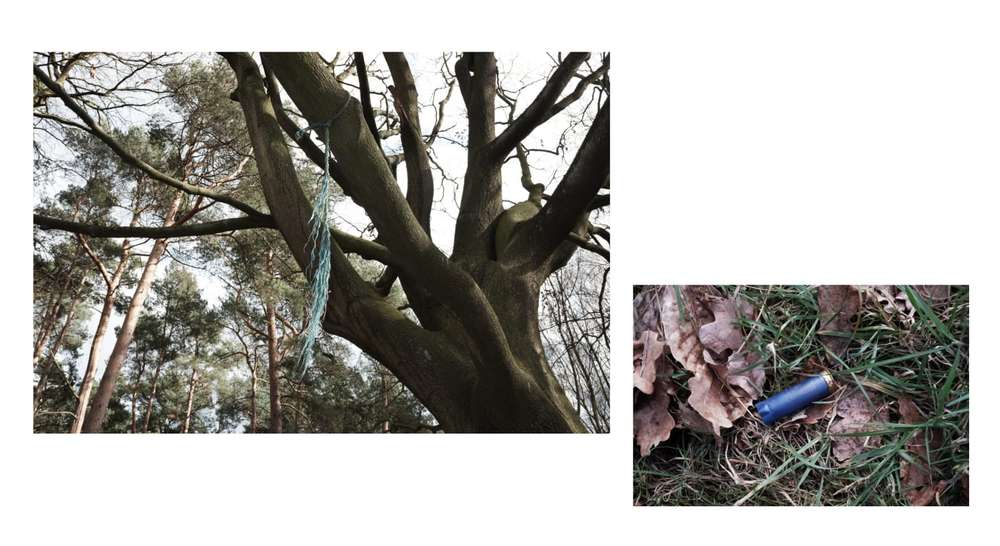
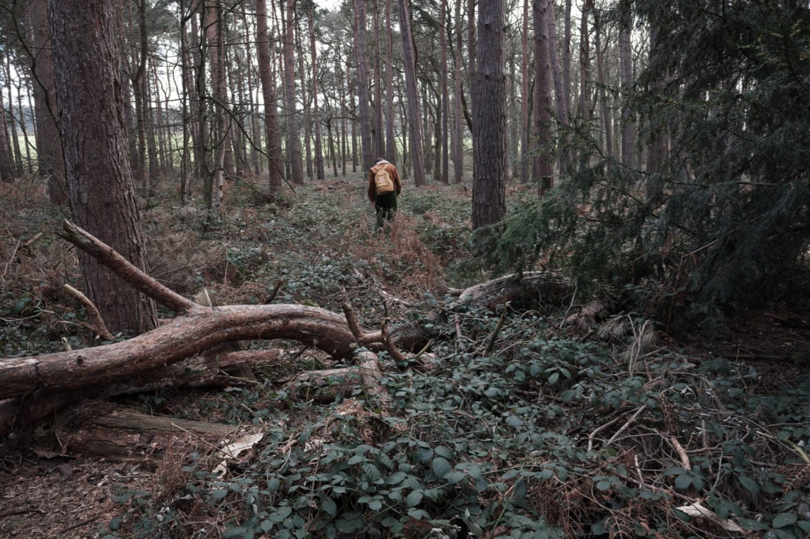

Rich's digital garden
Nature and Monachopsis
Seeking nature at Hundred-acre wood
Under the surveillance of a circling Buzzard, noon breaks as a hare floats across a field. It hesitates on the path, hopping ahead of us looking for a gap in the hedgerow. It finds one, and sprints into the next field, evaporating in the vague heat haze lingering above the saturated grassland. In a relatively flat banal landscape of industrial agriculture, these brief moments of awe are scarce. Awe is a complex emotion, one increasingly considered important for wellbeing. Similar ideas are being put forward about the benefits of nature and forests through shinrin-yoku (forest bathing).
Hoping to spend some time in nature we are visiting Hundred-acre wood. Lacking Winnie the pooh and friends, it’s displayed on a map as an unimaginative square-shaped woodland made up of various plantations. In person and from the outside, it appears like an island of woodland in a sea of bleak agrarian fields still barren from winter.
Pine, Birch, and Beech
{kind=link}
On entering, there are giant Beech trees planted in uniform like an estate avenue. The ground underneath the canopy is bare, scattered with hairy beechnut shells and orange-brown leaf debris. The trees themselves are defaced, carved with initials and dates going as far as the 1970s.
The line of Beech trees is adjacent to contemporary pine plantations entwined with sporadic singular Oak, Yew and Birch. Pathways crisscross throughout. Most originate from a car park, which is not functional having been requisitioned as storage for a nearby housing construction. The lack of visitors has allowed the paths to narrow, with limp brambles reaching out and brushing against my boots.
{kind=link}
Users are still evident though. A frayed rope swing sways in the breeze over a spent blue shotgun cartridge.
An assortment of logs, which judging by the various nut casings are utilised as dining room furniture by the squirrels, provide a place to rest. The dog gets her food and water, but she's too busy listening for possible predators. A set of Buzzard's swoop in and out of the woodland, gliding through the trees. They mew, but infrequently. Instead, a woodpecker's sonar-like drumming fills the woodland, followed by the dog's guffing. We sit and listen.
{kind=link}
Before leaving, we search for owl pellets beneath a tree where we found several the year before. We found none, maybe it's too early. Perhaps next time we will aim for Buzzard pellets.
Obscure woodlands such as hundred-acre that are outside of conventional urbanity and requiring effort to reach, are complex sites of interaction between culture and nature.
{kind=link}
Any illusion of wildness is lost to the equally spaced conifer plantation, yet there is wildlife here, more so than the plantations closer to urban circuits. Recognising nature here is to acknowledge culture's influence. Without one there is no other. The establishment of the plantation provides space for nature whether that's the sprawling bramble or the obscure woodpecker.
I am sceptical of romanticised forest bathing amongst shotgun cartridges, non-indigenous conifers and defaced trees. All the same, the woodpecker drumming through the woodland is an awe experience I won't forget for a while.
Monachopsis
Noun. The subtle but persistent feeling of being out of place, as maladapted to your surroundings as a seal on a beach.
I came across this term reading Losing Eden. A lot of my work fits the concept.
 Interfacial and ambiguous spaces frequently produce a similar confusing feeling. It occurs when observing an artefact foreign to the surrounding environment therefore lacking context.
Interfacial and ambiguous spaces frequently produce a similar confusing feeling. It occurs when observing an artefact foreign to the surrounding environment therefore lacking context.
The muddle of human and natural agency that is often present within interstitial wilderness sites creates conceptual as well as physical confusion (Jorgensen and Tylecote, 2007, p. 445).
Examples taken from the above sketchbook scan: a metal post and chain on a woodland access road, a discarded orange bag in a patch of dead ferns, and a drain pipe obstructing a woodland view. All are examples of juxtaposed artificial artefacts against a natural surrounding.
The opposite can also occur by observing nature within an urban environment. For example, the Buddleja growing in the cracks of a brick wall and pavement found at the side of a car park.
Plastic is often a source of monachopsis. I have found plastic bags, chairs, and tents in interfacial spaces.
 Wind snagged dog bag in the hawthorn
Wind snagged dog bag in the hawthorn
Strange pieces of debris of twentieth-century capitalism seem to have some of the capacity to inspire awe as the left-over artefacts of other ages – like Stonehenge. Like such ancient relics, the relics of our own age now stand outside the humdrum landscape of everyday life (Shoard, 2000, 84).
 When I read Shoard’s description of twentieth-century capitalist relics, I always think back to this image I took of a burnt-out car in a field of corn. Reflecting on the concept of monachopsis for this newsletter, I decided to put the image to use. I found the digital file. Printed it for the first time. Pressed it in my sketchbook. The image is fourteen years old! Playing into the contextualization of the relic of our own age. Inadvertently I have realized I have come full circle returning to capturing scenes like these that interest me.
When I read Shoard’s description of twentieth-century capitalist relics, I always think back to this image I took of a burnt-out car in a field of corn. Reflecting on the concept of monachopsis for this newsletter, I decided to put the image to use. I found the digital file. Printed it for the first time. Pressed it in my sketchbook. The image is fourteen years old! Playing into the contextualization of the relic of our own age. Inadvertently I have realized I have come full circle returning to capturing scenes like these that interest me.
Bibliography
Jorgensen, A. and Tylecote, M. (2007) Ambivalent landscapes—wilderness in the urban interstices, Landscape Research, 32(4), pp. 443–462.
Shoard, M. (2000). Edgelands of Promise. https://doi.org/10.1179/lan.2000.1.2.74
Bookmarks
This article is from my newsletter. Consider subscribing, it's free and weekly.
Created
28/02/2021
Topics
Roadside Picnic
Edgeland
Walking
Psychogeography